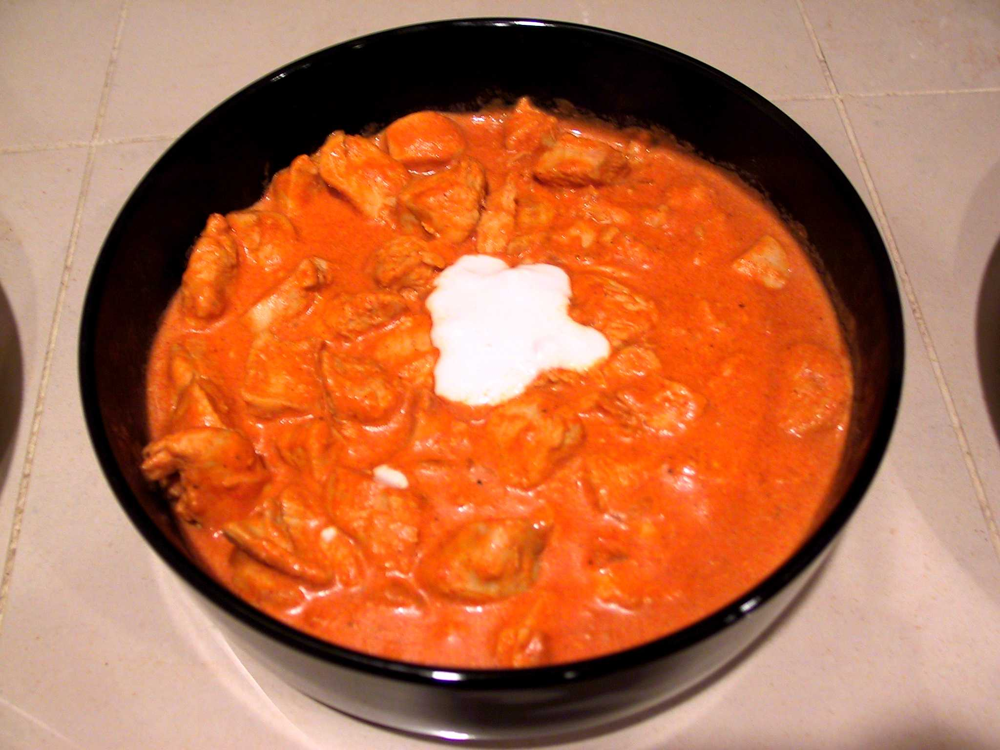

Chicken Paprikash with Potatoes
Description
Chicken paprikash with potatoes is a hearty and flavorful one-pot meal that's a staple of Hungarian cuisine. It features tender chicken pieces (usually thighs or drumsticks) braised in a rich, creamy, and vibrant sauce made with a generous amount of sweet Hungarian paprika, onions, and sour cream.
Ingredients
- 2 lbs bone-in, skin-on chicken pieces
- 2 large yellow onions, finely chopped
- 4 cloves garlic, minced
- ¼ cup sweet Hungarian paprika
- 1 tbsp lard or vegetable oil
- 2 cups chicken broth
- ½ cup sour cream, full-fat
- 1 tbsp all-purpose flour
- 1½ lbs potatoes, peeled and cut into 1-inch cubes
- Salt and black pepper
- Fresh parsley, chopped, for garnish
Cooking Steps
- Pat the chicken pieces dry with a paper towel. Season them generously on all sides with salt and black pepper.
- In a large Dutch oven or a heavy-bottomed pot, heat the lard or oil over medium-high heat. Carefully place the chicken pieces skin-side down and sear until the skin is golden brown and crispy, about 5-7 minutes. Flip the chicken and sear the other side for another 3-4 minutes. Remove the chicken from the pot and set it aside.
- Reduce the heat to medium. Add the chopped onions to the same pot and cook, stirring occasionally, until they are soft and translucent, about 8-10 minutes. If the pot seems too dry, add a little more oil. Add the minced garlic and cook for another minute until fragrant.
- Remove the pot from the heat and stir in the Hungarian paprika. If you add the paprika while the pot is on the heat, it can burn and turn bitter. Stir continuously for about 30 seconds to "bloom" the paprika and release its flavor.
- Slowly pour in the chicken broth, scraping the bottom of the pot with a wooden spoon to loosen any browned bits. Return the pot to the heat. Bring the sauce to a gentle simmer.
- Return the seared chicken pieces to the pot, nestling them into the sauce. Add the cubed potatoes, ensuring they are mostly submerged in the liquid. If needed, add a little more broth to cover the potatoes.
- Bring the mixture to a simmer, then reduce the heat to low, cover the pot, and let it braise for 30-40 minutes, or until the chicken is cooked through and the potatoes are tender when pierced with a fork.
- In a small bowl, whisk together the sour cream and flour until smooth. This slurry will prevent the sour cream from curdling when added to the hot sauce.
- Once the chicken and potatoes are tender, remove the pot from the heat. Gradually whisk a spoonful or two of the hot sauce into the sour cream slurry to temper it, then slowly pour the tempered mixture into the pot, stirring constantly. This will thicken the sauce and add a creamy richness. Do not let the pot boil after adding the sour cream, as it may curdle.
- Taste the sauce and adjust with salt and pepper as needed. Garnish with fresh chopped parsley and serve hot. Optionally serve with a side of crusty bread to soak up the delicious sauce.